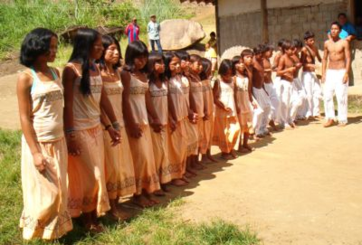
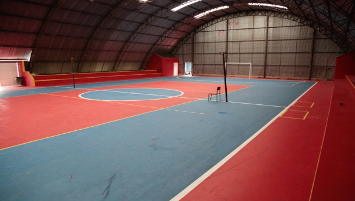
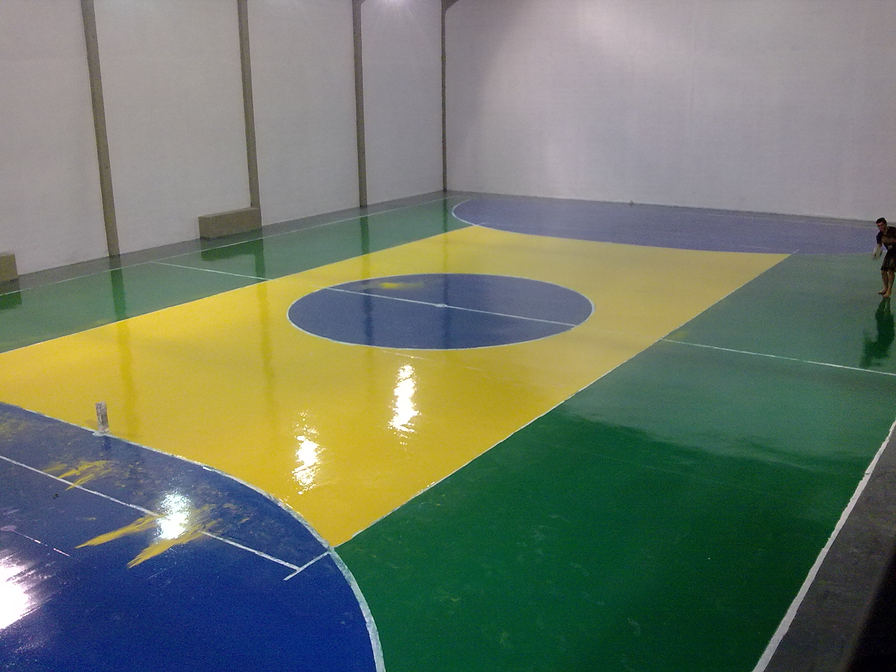
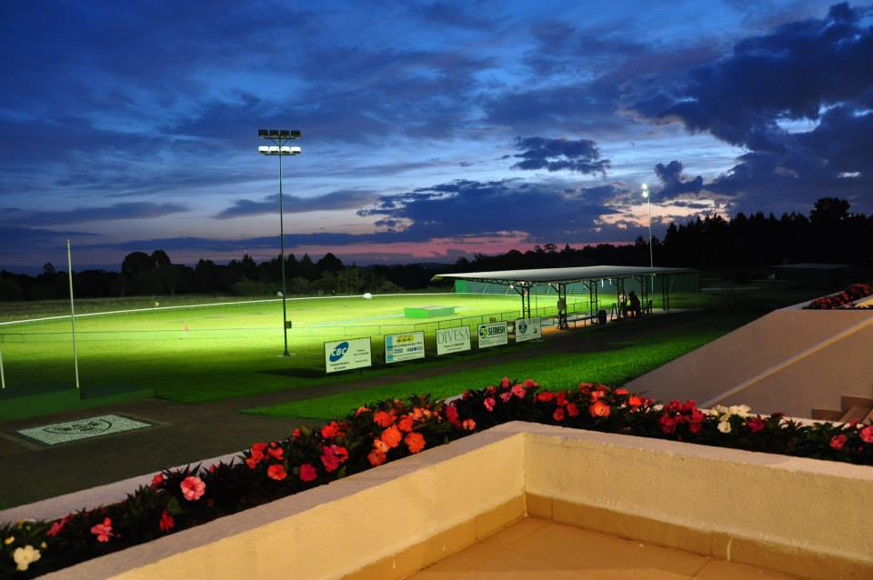

Haras Buena Vista

Capoeira dos Dinos - R. Nova Tirol, nº 1.188 - Vila Fuck, Piraquara - PR, 83306-230 +55 41 99959-6900
Aldeia Indígena Araçai
A área da Aldeia Araçaí fica localizada em uma reserva de proteção ambiental, o que impede que os índios possam plantar alimentos. A renda familiar vem da comercialização de artesanatos - feitos de penas de aves, palhas e madeira - , que são oferecidos para os visitantes na própria aldeia. É localizada na Vila Fuck , Piraquara - PR.
Casa da Cultura da Água - SANEPAR

Endereço Via Google Maps Piraquara - PR. Telefone: +55 41 99967-8889
Cinema.com

Contato: (41) 3589-1592. Endereço: Avenida Getúlio Vargas, 35 - Centro, Piraquara - PR, 83301-010, Brasil. Horário de funcionamento: Domingo: 13:00 - 21:00; Segunda-Feira: 13:00 - 21:00; Terça-Feira: Fechado; Quarta-Feira: 13:00 - 21:00; Quinta-Feira: 13:00 - 21:00; Sábado: 13:00 - 21:00;
Ginásio Poliesportivo Gilberto Alves do Nascimento
Endereço: R. Vitório Scarante, 376 - Centro, Piraquara - PR, 83301-530, Horário de funcionamento: 07:00–12:00, Telefone: (41) 3590-3500.
Centro Esportivo Bola 13
Endereço: Rua Mathias Jacomel, 268 - Jardim Esmeralda - CEP 83301-380 - Piraquara/PR. Telefone: (41) 3669-0242.
Yellow ball - Arco e Flecha

Rua Isidoro Canestraro, 111, Jardim Santa Helena,Piraquara - PR, CEP: 83308-500. Telefone: (41) 3667-4444. Domingo: Fechado; Seg à Sex: 09:00 às 18:00; Sáb: 09:00 às 12:00.
Clube Paraense de Tiro
Endereço: R ENGENHEIRO JOSÉ GILBERTO HIGINO DA COSTA, 1433, CASA, VILA MILITAR, CEP 83303-340 - PIRAQUARA | PARANÁ. Telefone Principal: (41) 98412-4822. Horário de funcionamento: Domingo: Fechado; Segunda-Feira: Fechado; Terça-Feira: 08:00–18:00; Quarta-Feira: 08:00–18:00; Quinta-Feira: 08:00–18:00; Sexta-Feira: 08:00–18:00; Sábado: 08:00–18:00;